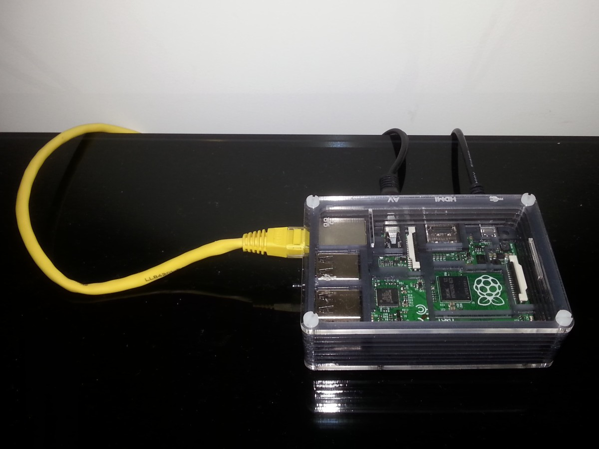

Install Arch Linux and Mopidy on a Raspberry Pi
sam. 22 novembre 2014What ?
I describe here how I did install Mopidy under Arch Linux on a Raspberry Pi. To do that, I did use :
- a Raspberry Pi model B+
- a power Adaptator from Aukru (AP12003UV)
- speakers that you can plug on a 3.5mm jack
- a microSD card (32Gb)

Why ?
I read an article on linuxfr, got time and no wish to travel. So I decided to buy a Raspberry Pi and to install a MPD with a web frontend on it.
I randomly choose Mopidy, probably because it was the first one I found written in Python.
I could just install Pi MusicBox, but I didn’t want a system dedicated to this only use. The article on linuxfr is based on Arch Linux and I never installed it on any of my computer, so it was a good opportunity to change that.
I took a Raspberry Pi model B+ because it was cheap and new and a bit better than other models. A Raspberry Pi does not come with its power adaptator, you have find one separatly and the one from Aukru seems to be quite popular among the Raspberry Pi community. You also have to buy a SD card, I took a 32Gb microSD card to not feel under constraint.
How ?
First we plug the microSD card into our computer running under GNU/Linux, then follow the instructions for the Arch Linux website. For me it was :
$ umount /dev/sdd1
$ fdisk /dev/sdd
Type p to list partitions.
Disk /dev/sdd: 31.9 GB, 31914983424 bytes
Type o. This will clear out any partitions on the drive.
Type p to list partitions. There should be no partitions left.
Type n, then p for primary, 1 for the first partition on the drive, press ENTER to accept the default first sector, then type +100M for the last sector.
Type t, then c to set the first partition to type W95 FAT32 (LBA).
Type n, then p for primary, 2 for the second partition on the drive, and then press ENTER twice to accept the default first and last sector.
Write the partition table and exit by typing w
$ mkfs.vfat /dev/sdd1
$ mkdir boot
$ mount /dev/sdd1 boot
$ mkfs.ext4 /dev/sdd2
$ mkdir root
$ mount /dev/sdd2 root
$ wget http://archlinuxarm.org/os/ArchLinuxARM-rpi-latest.tar.gz
$ bsdtar -xpf ArchLinuxARM-rpi-latest.tar.gz -C root
$ sync
$ mv root/boot/* boot
$ umount boot root
Then we remove the microSD card from the computer and put it into the Raspberry Pi, connect the Raspberry Pi on the network using the Ethernet port and then plug the power Adaptator. Then we log on the Raspberry Pi with ssh (to know the IP adress of your Raspberry Pi depends on how your network is set up, so I can’t really help you for that) :
$ slogin root@192.168.0.15
root@192.168.0.15's password:
The default password for root is root. And you should change it as soon as possible.
Then we update the system and create a new user.
$ pacman -Suy
$ pacman -S adduser
$ adduser mopidy
adduser is a tool to easily add a new user. We just press ENTER to all the questions except the one about additional groups, here we choose audio.
We will then use yaourt, a wrapper for pacman, the Arch Linux package manager.
$ pacman -S yaourt
error: target not found: yaourt
Erm. I do not remember where I found the solution but here is how to install yaourt on Arch Linux :
$ pacman -S base-devel
$ pacman -S yajl
$ su mopidy
$ cd
$ mkdir install
$ cd install
$ curl -O https://aur.archlinux.org/packages/pa/package-query/package-query.tar.gz
$ tar xf package-query.tar.gz
$ cd package-query
$ makepkg -Acs
$ su
$ pacman -U package-query-1.4-1-armv6h.pkg.tar.xz
$ exit
$ cd ..
$ curl -O https://aur.archlinux.org/packages/ya/yaourt/yaourt.tar.gz
$ tar xf yaourt.tar.gz
$ cd yaourt
$ makepkg -Acs
$ su
$ pacman -U yaourt-1.5-1-any.pkg.tar.xz
$ exit
$ cd ..
Now we can install Mopidy easily, and launch it to be sure it is working.
$ yaourt -S mopidy
$ yaourt -S mopidy-musicbox
$ mopidy
Ctrl-C
Ctrl-C will shut down the Mopidy server and mopidy-musicbox is one of the many web frontend available for Mopidy (the one from Pi MusicBox). yaourt will ask for root password, according to the documentation, it is only to launch pacman.
Then we have to make directories and set up the Mopidy configuration. For a start we do it as simple as possible.
$ cd
$ mkdir media
$ mkdir data
$ mkdir playlists
$ vi .config/mopidy/mopidy.conf
I paste here the change i made in the configuration file :
[local]
media_dir = /home/mopidy/media
data_dir = /home/mopidy/data
playlists_dir = /home/mopidy/playlists
[mpd]
hostname = 0.0.0.0
[http]
hostname = 0.0.0.0
Then we will set it up as a service for systemd with the help of dz0ny.
$ su
$ vi /etc/systemd/system/mopidy.service
Here is the file :
[Unit]
Description=Mopidy
After=network.target
[Service]
User=pi
ExecStart=/usr/bin/mopidy --config=/home/mopidy/.config/mopidy/mopidy.conf
Restart=on-abort
[Install]
WantedBy=multi-user.target
And Finally
$ systemctl enable /etc/systemd/system/mopidy.service
$ reboot
Now we can connect on our server with our favourite browser. For me it was : http://192.168.0.15:6680/ Want more ?
Ok, a few other things I’ve done and that may help you also :
- Following the article on linuxfr i bought a USB DAC (this one from HiFimeDIY based on one comment of this article).
To make it work we have to comment the Raspberry Pi audio module.
$ vi /etc/modules-load.d/raspberrypi.conf
And change this :
#snd-bcm2835
Then force its index into the alsa configuration file.
$ vi /etc/modprobe.d/alsa-base.conf
And add this (the file was created by the previous command) :
options snd-usb-audio index=0
-
I also bought a box for the Raspberry Pi, the B+ Ninja Pibow. Because it looks cool (see image at top of this article).
-
To change the default radio stations list of the MusciBox webserver you have to manually edit a file, restart the Mopidy server, remove the cookies for the site and reload the page.
Here is the file to change (there is probably a better way) :
$ vi /usr/lib/python2.7/site-packages/mopidy_musicbox_webclient/static/js/radiostations.js
That’s all for now (even if I will probably correct or update this post later :)